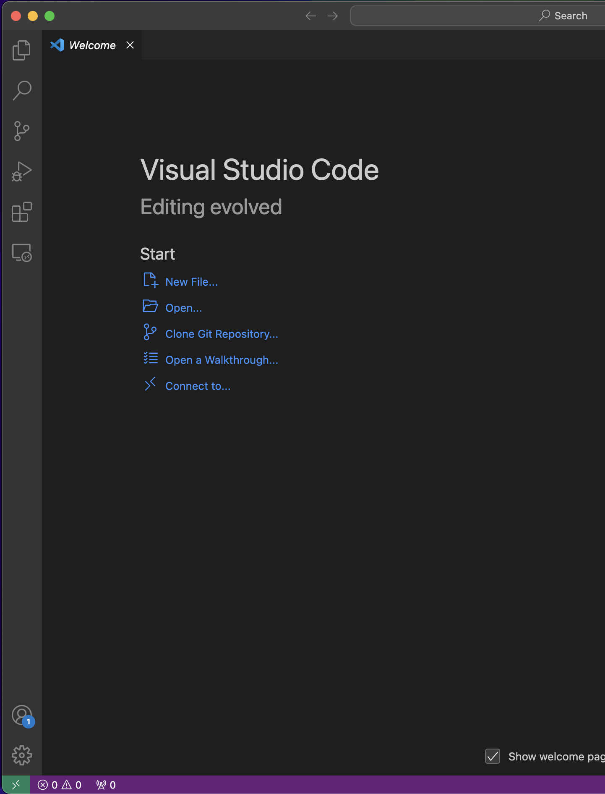

NASA Dust and Satpy_tools Documentation#
Introduction#
This documentation covers both NASA Dust—a simulation framework—and Satpy_tools—a satellite propagation toolkit. The instructions below detail installation, configuration, and an overview of the codebases.
Installation Tutorial#
Note: The following tutorial was written using Visual Studio Code and Anaconda. The steps should be similar for other IDEs and package/environment managers, though they have not been tested. If possible, also use Windows Subsystem for Linux (WSL) with Ubuntu (the default distro for WSL). (On Windows 10, WSL may have issues with Matplotlib.)
### Required Software
Install the following software if not already available:
Git: install git
Visual Studio Code: install VS Code
Anaconda: install Anaconda
### VS Code Extensions
You will need these VS Code extensions:
Python: install python
WSL: install WSL
Additional recommended extensions:
Excel Viewer: install Excel Viewer
Rainbow CSV: install Rainbow CSV
Catppuccin Theme: install Catppuccino Theme
Catppuccin Icons: install Catppuccino Icons
isort: install isort
### SSH Key Setup
Generate an SSH Key: Follow these instructions: Generate an SSH key pair
Add the SSH Key to GitLab: Follow this tutorial: Add an SSH key to your GitLab account
### Cloning the Repository
Clone the repository along with its submodule using the recursive flag:
git clone git@code.vt.edu:truman99/nasa_dust.git --recurse-submodules
### Opening in VS Code
Open the repository in VS Code. After onboarding, you should see an interface similar to the following:
Hint: Click the folder open button, navigate to where you cloned the repository, single-click the folder (do not open it), then select “Open” from the popup (bottom right).
### Git Configuration
In a terminal, navigate to the repository and configure Git (skip the configuration commands if already done):
cd path/to/repo/nasa_dust
git config --global user.name "Your Name"
git config --global user.email "your.email@email.com"
### Environment Setup and Package Installation
Create a conda environment and install the required packages:
conda create -n nasa_dust python=3.13
conda activate nasa_dust && pip install --no-cache-dir -r src_dust/satpy_tools/requirements.txt
### Updating the Repository
To update both the main repository and the submodule, run:
git pull --recurse-submodules
git submodule update --remote
Codebase Overview#
This section provides an overview of the two codebases: NASA Dust and Satpy_tools.
NASA Dust#
The NASA Dust project is centered around the simulation framework. Key details include:
Main Code: The core functionality is implemented in
src_dust/sim_funcs.py, which contains all the main classes that run the simulation.Submodule: The project includes the satpy_tools submodule that handles satellite propagation (see the section below).
### Notes on Units (NASA Dust)
Standard Units: All inputs and outputs are expected to be in kilometers (km), kilograms (kg), seconds (s), and radians (rad) unless otherwise specified (e.g., in variable names or function arguments).
Exceptions: - Area-to-Mass Ratio: m²/kg - Object Radius (for propagator): meters (m) - Julian Date (jd): days - Some constants (e.g., EV in C): may use different units
### Extra Notes
NumPy Array Types: Be cautious when working with NumPy arrays to ensure proper type conversion. For example:
# This may not produce the expected result: np.array([1, 2, 3]) + 1e-9 # Specify the data type explicitly: np.array([1, 2, 3], dtype=np.float64) + 1e-9 # Or use a helper function to ensure the correct type: ensure_array_type(np.array([1, 2, 3])) + 1e-9
Satpy_tools#
The Satpy_tools repository provides general satellite propagation functionality. Important points include:
Directory Structure: The main folder is
src, which contains two key files:propagators.pyperturbs.py
Key Functions:
lightyear_prop_step(): This function accepts arguments to control which perturbations are included and returns the satellite state at the requested times, the corresponding times, and ground flags (indicating if the satellite has hit the ground).lightyear_prop(): Use this function if you only require the final state of the propagation.
Perturbations Available:
Spherical Harmonic Gravity of Earth
Drag
Solar Radiation Pressure (SRP)
Earth Radiation Pressure
Tides
Sun Gravity
Moon Gravity
Coulomb Drag
Lorentz Force
Additionally, the following perturbations are implemented but are **not* included in the lightyear dust propagation:*
Venus Gravity
Jupiter Gravity
Relativity
### Notes for the Programmer
Private Functions: Functions that begin with an underscore (
_) are intended for internal use and should not be called by end users.
### Notes on Units (Satpy_tools)
Standard Units: As with NASA Dust, all inputs and outputs are in kilometers (km), kilograms (kg), seconds (s), and radians (rad) unless noted otherwise.
Exceptions: - Area-to-Mass Ratio: m²/kg - Object Radius (for propagator): meters (m) - Julian Date (jd): days
Conclusion#
This document provides an overview of the installation, configuration, and core structure of both the NASA Dust simulation framework and the Satpy_tools satellite propagation toolkit. For further details, please refer to the source code and inline documentation within each module.